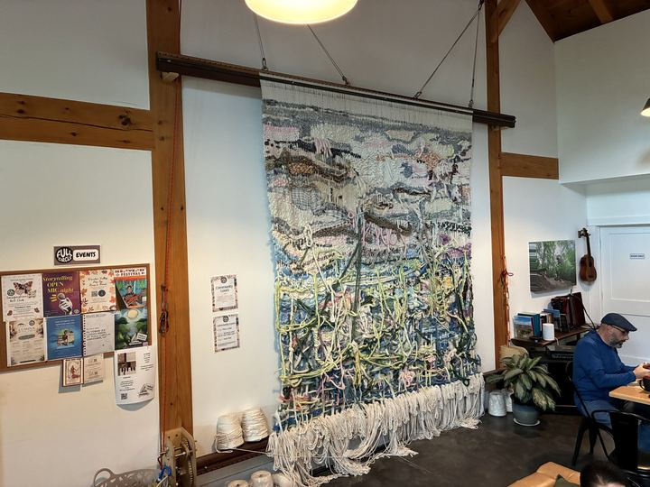
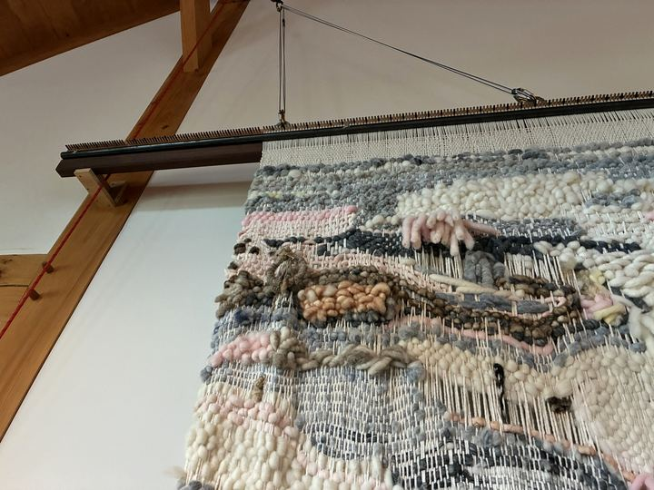
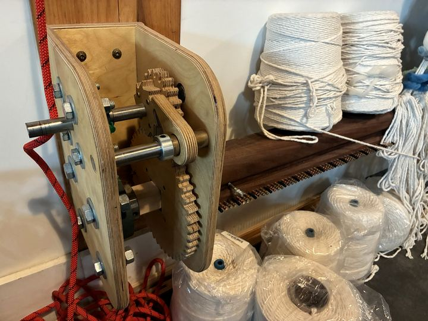
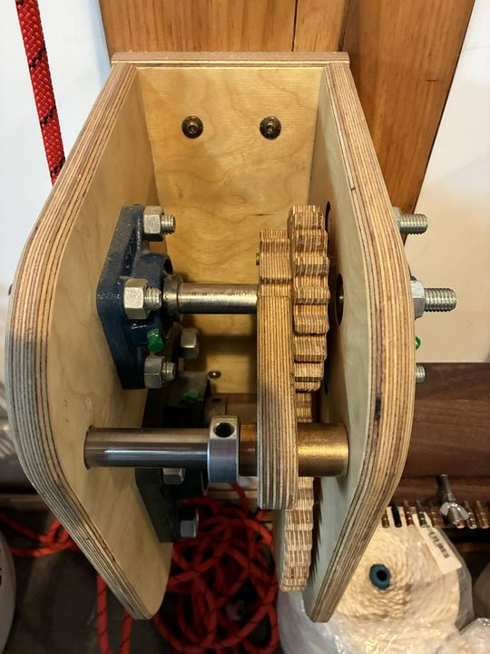
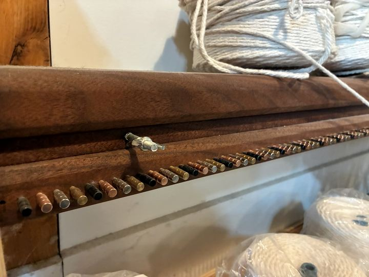
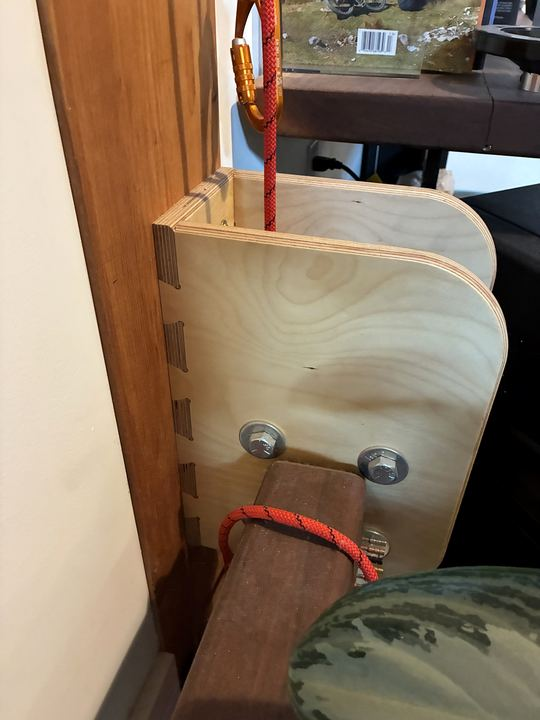
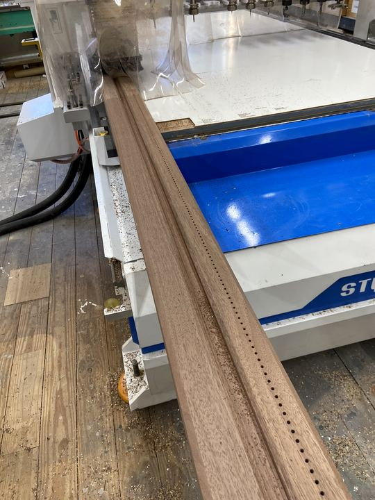

Community loom at Full Circle
A 22-foot community loom in The Living Room at Full Circle, where anyone who visits can add a few rows to a shared tapestry.
Full Circle wanted a loom big enough for a whole community to weave on together. Matt Rogers of Hudson Valley CNC built the 22-foot loom with Full Circle co-founder Mike Benevento, and artist Paula Kucera and local fashion teachers helped lead the weaving. It hangs in The Living Room, Full Circle’s music and gathering space in Gardiner.
The working parts were cut on our CNC router: plywood side plates and ratchet gear mechanisms that tension and advance the warp, and a hardwood beam drilled with a long row of pegs to space the warp threads evenly. The finished tapestry grows a little with every visitor.
It’s a good example of what we like building: something useful and good-looking that brings people together, designed and made right here in the Hudson Valley.
“The campus has also hosted makers’ markets, food-pantry fundraising, art workshops, and a 22-foot community loom built by Mike and local woodworker Matt Rogers, with artist Paula Kucera and local fashion teachers helping to lead the project.”
Chronogram, “Full Circle Gardiner Builds Community by Design,” Brian K. Mahoney, August 21, 2026
| Size | 22 feet |
|---|---|
| Built by | Matt Rogers (Hudson Valley CNC) and Mike Benevento |
| Weaving led by | Artist Paula Kucera and local fashion teachers |
| Client | Full Circle Gardiner |
| Where | The Living Room, 297 Bruynswick Rd, Gardiner, NY |
| Work | CNC-cut plywood ratchet and gear mechanisms, side plates, pegged hardwood beam |
| Related | Signs for The Living Room and the trail entrance |






